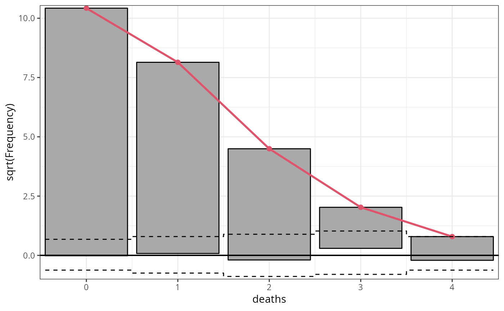

Rootograms for Assessing Goodness of Fit of Probability Models
rootogram.RdRootograms graphically compare (square roots) of empirical frequencies with fitted frequencies from a probability model.
rootogram(object, ...) # S3 method for default rootogram( object, newdata = NULL, plot = TRUE, class = NULL, style = c("hanging", "standing", "suspended"), scale = c("sqrt", "raw"), breaks = NULL, width = NULL, response_type = NULL, xlab = NULL, ylab = NULL, main = NULL, ... )
Arguments
| object | an object from which an rootogram can be extracted with
|
|---|---|
| ... | further graphical parameters passed to the plotting function. |
| newdata | optionally, a data frame in which to look for variables with which to predict. If omitted, the original observations are used. |
| plot | Should the |
| class | Should the invisible return value be either a |
| style | character specifying the syle of rootogram (see below). |
| scale | character specifying whether raw frequencies or their square roots (default) should be drawn. |
| breaks | numeric. Breaks for the histogram intervals. |
| width | numeric. Widths of the histogram bars. |
| response_type | To set the default values for |
| xlab, ylab, main | graphical parameters. |
Value
An object of class "rootogram" inheriting from
"data.frame" with the following variables:
observed frequencies,
fitted frequencies,
histogram interval midpoints on the x-axis,
bottom coordinate of the histogram bars,
widths of the histogram bars,
height of the histogram bars,
y-coordinates of the fitted curve.
Details
Rootograms graphically compare frequencies of empirical distributions and
fitted probability models. For the observed distribution the histogram is
drawn on a square root scale (hence the name) and superimposed with a line
for the fitted frequencies. The histogram can be "standing" on the
x-axis (as usual), or "hanging" from the fitted curve, or a
"suspended" histogram of deviations can be drawn.
rootogram is the generic function for generating rootograms from data
or fitted model objects. The workhorse function is the default method (that
computes all necessary coordinates based on observed and fitted frequencies
and the breaks for the histogram intervals) and the associating plot
method that carries out the actual drawing (using base graphics).
There is a wide range of further rootogram methods that all take the
following approach: based on a fitted probability model observed and
expected frequencies are computed and then the default method is called.
Currently, there is a method for glm.
Furthermore, there is a numeric method that uses
link[MASS]{fitdistr} to obtain a fitted (by maximum likelihood)
probability model for a univariate variable. For this method, fitted
can either be a character string or a density function that is passed to
fitdistr. In the latter case, a start list also has to be
supplied.
In addition to the plot method for rootogram objects, there are also
two methods that combine two (or more) rootograms: c/rbind
creates a set of rootograms that can then be plotted in one go. The +
method adds up the observed and fitted frequencies from two rootograms (if
these use the same intervals).
The autoplot method creates a
ggplot version of the rootogram.
Note
Note that there is also a rootogram function in the
vcd package that is similar to the numeric method provided
here. However, it is much more limited in scope, hence a function has been
created here.
References
Friendly M (2000), Visualizing Categorical Data. SAS Institute, Cary.
Kleiber C, Zeileis A (2016). “Visualizing Count Data Regressions Using Rootograms.” The American Statistician, 70(3), 296--303. c("\Sexpr[results=rd,stage=build]tools:::Rd_expr_doi(\"#1\")", "10.1080/00031305.2016.1173590")doi: 10.1080/00031305.2016.1173590 .
Tukey JW (1977). Exploratory Data Analysis. Addison-Wesley, Reading.
See also
Examples
## plots and output ## number of deaths by horsekicks in Prussian army (Von Bortkiewicz 1898) deaths <- rep(0:4, c(109, 65, 22, 3, 1)) ## fit glm model m1 <- glm(deaths ~ 1, family = poisson) rootogram(m1)## inspect output (without plotting) r1 <- rootogram(m1, plot = FALSE) r1#> observed expected x y width height line #> 1 109 108.6701738 0 -0.01580778 0.9 10.440307 10.4244987 #> 2 65 66.2888061 1 0.07953604 0.9 8.062258 8.1417938 #> 3 22 20.2180859 2 -0.19396317 0.9 4.690416 4.4964526 #> 4 3 4.1110108 3 0.29551196 0.9 1.732051 2.0275628 #> 5 1 0.6269291 4 -0.20821143 0.9 1.000000 0.7917886#------------------------------------------------------------------------------- ## different styles ## artificial data from negative binomial (mu = 3, theta = 2) ## and Poisson (mu = 3) distribution set.seed(1090) y <- rnbinom(100, mu = 3, size = 2) x <- rpois(100, lambda = 3) ## glm method: fitted values via glm() m2 <- glm(y ~ x, family = poisson) ## correctly specified Poisson model fit r1 <- rootogram(m2, style = "standing", ylim = c(-2.2, 4.8), main = "Standing", plot = FALSE) r2 <- rootogram(m2, style = "hanging", ylim = c(-2.2, 4.8), main = "Hanging", plot = FALSE) r3 <- rootogram(m2, style = "suspended", ylim = c(-2.2, 4.8), main = "Suspended", plot = FALSE) plot(c(r1, r2, r3))#------------------------------------------------------------------------------- ## linear regression with normal/Gaussian response: anorexia data data("anorexia", package = "MASS") m3 <- glm(Postwt ~ Prewt + Treat + offset(Prewt), family = gaussian, data = anorexia) rootogram(m3, ylim = c(-1, 4))